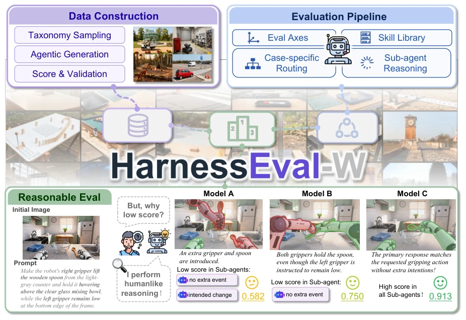
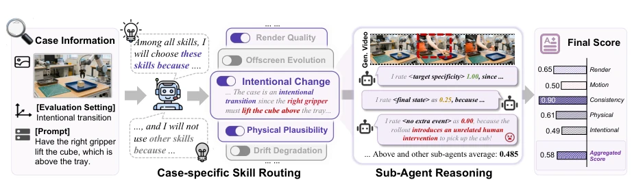
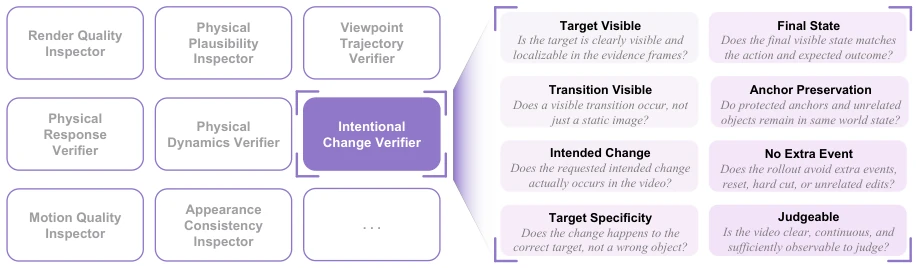
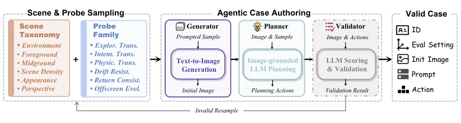
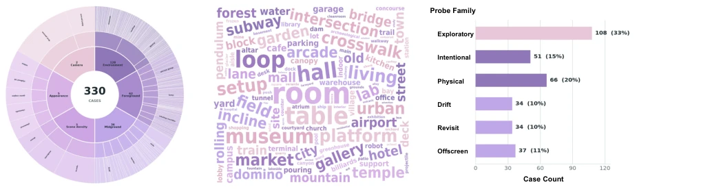
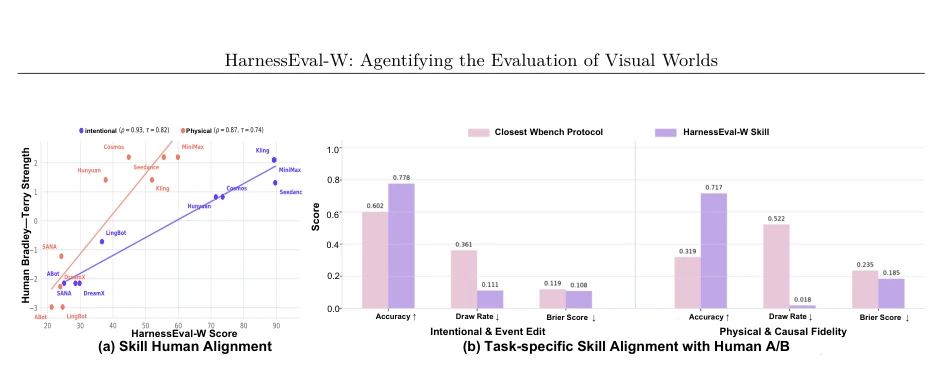
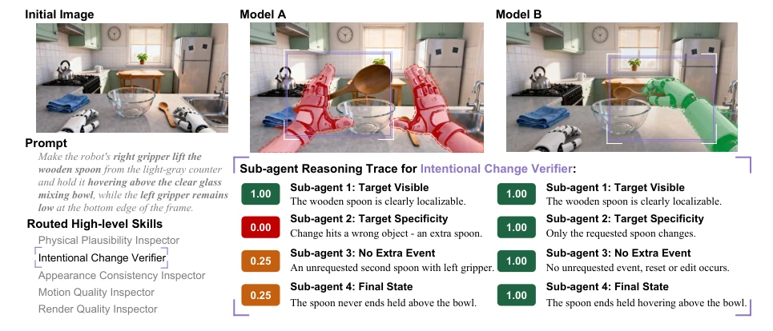
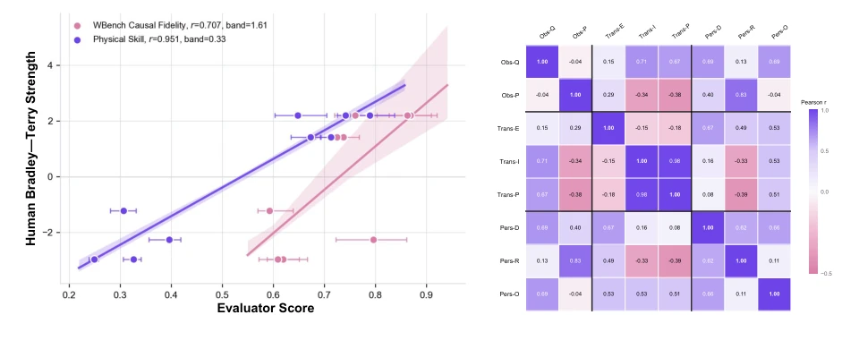
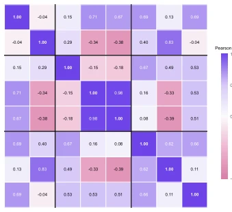
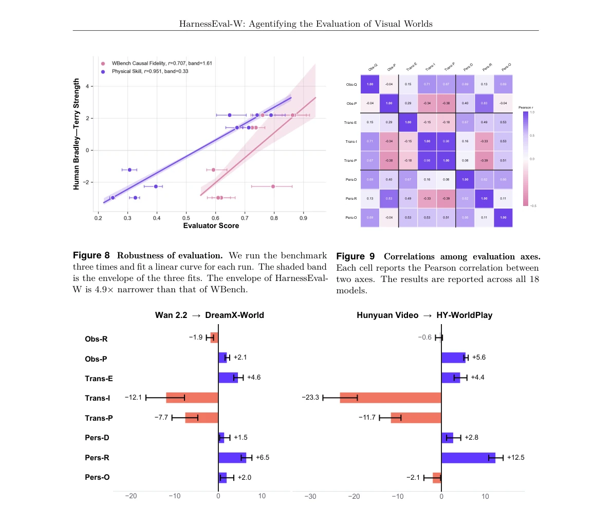

This paper adds an "LLM Agent filter" to world model evaluation, attempting to use an Agent-based workflow to solve the black-box problem of traditional Benchmarks that only provide scores without reasons. Although the "evidence tree" sounds appealing, capable of tracing the physical reasons for each low score, the cost is that computational expense might be even higher than running the model itself. For the Embodied AI field, physical consistency is indeed a pain point, but using a complex Agent system to evaluate another Agent system, does this count as "Russian nesting dolls"? However, at least it clarifies "why the score is low", which is better than those that only score like VBench [17]. It is just unknown whether this evaluation system itself might misjudge due to hallucinations, after all it is also based on VLM. It claims to be a "living" Benchmark, allowing the community to contribute new skills, this point is quite open, but the maintenance cost is estimated to be not low.
The biggest problem with existing world model evaluation is "giving results without reasons". Like VBench [17] or EvalCrafter [18], although dimensions are many, essentially still static scoring, unable to explain why physical causality or state evolution goes wrong. WBench [34] although attempted protocols, still fixed rubric, unable to adapt to context of different cases. Humans can naturally discover physical loopholes, but automated evaluation can only brute-force calculate metrics. This leads to model improvement lacking direction, for example not knowing if the physics engine crashed or the renderer broke. HarnessEval-W attempts to use the LLM harness paradigm to solve this interpretability problem, making the evaluation itself possess reasoning capability, ensuring evaluation results are verifiable and traceable. Especially for world models, judging whether rollout is correct requires understanding physics, causality, and world state, existing methods cannot do this.
The core is a hierarchical Agent workflow. First define three evaluation axes: Observation Quality (Rendering Quality), Transition Correctness (State Transition Correctness), World Persistence (World Persistence). Evaluation process divided into three steps: 1. Case-specific Skill Routing: Based on prompt and initial image, route from skill library to appropriate high-level skill (e.g., Intentional Change Verifier). 2. Sub-agent Reasoning: High-level skills decomposed into measurable sub-questions (e.g., target visibility, final state), executed and scored by dedicated sub-Agents, each sub-Agent equipped with specific context and diagnostic tools. 3. Evidence Aggregation: Parent Agent verifies sub-Agent evidence, generates transparent evidence tree. Data construction also used Agents, sampling scenes via Scene Taxonomy, Image-grounded Planner generates actions, Validator verifies feasibility, ensuring diversity and diagnosability of 330 cases. Skill library designed to be extensible, new skills can be added without changing framework.

Figure 1 HarnessEval-W. The agentified benchmarks for interactive world models. Given an evaluation case, HarnessEval-W routes it to the appropriate skills, decomposes each skill into measurable sub-questions answered by specialized sub-agents, and aggregates the validated evidence into a final score that traces back to the exact sub-questions that failed.

Figure 2 Overview of the HarnessEval-W evaluation pipeline. Given a case with its prompt and evaluation setting, the agentic planner routes the case to applicable skills from the skill library, recording an evidence-grounded reason for every activated and skipped skill (e.g., the Offscreen Evolution Verifier is skipped because all requested actions remain visible). Each activated skill spawns sub-agents that inspect the world model rollout for specific sub-questions, such as target visibility and final state validity; here, the Intentional Change Verifier detects an unrelated human intervention picking up the cube and zeroes the no-extra-event score. The collected evidence is finally aggregated into per-dimension scores and an interpretable final score.

Figure 3 Hierarchical structure of sub-agent reasoning for high-level skills. The Intentional Change Verifier skill decomposes its evaluation into eight measurable sub-questions, each answered by a dedicated sub-agent that inspects the rollout evidence and returns a discrete score with its reasoning.

Figure 4 Overview of the HarnessEval-W data construction pipeline. We first sample an initial world setup from a predefined scene taxonomy and probe family, and then employ a series of agents for world generation, action planning, and case validation.
Evaluated 18 models on 330 cases (including Seedance, Wan, Kling, etc.). Results show Seedance 2.0 total score first. Key validation is Human Alignment, with human preference Spearman correlation coefficient reaches 0.93, significantly better than WBench's Event Edit and Causal Fidelity protocols (accuracy improved 40%+, Draw rate dropped to 1.8%). Robustness test shows HarnessEval-W score fluctuation between different run rounds is far smaller than WBench. Ablation analysis finds, different model capability distribution uneven, fine-tuning can transfer capabilities rather than uniformly improve. Evaluation metrics cover 8 settings, including Render Quality, Physical Observation, etc., finally normalized to 1-100 score.

Figure 5 Statistics of the HarnessEval-W cases. (a) Case taxonomy distribution in HarnessEval-W. (b) Keyword frequency over scene descriptions. (c) Probe family distribution.

Figure 6 Human alignment of HarnessEval-W and its comparison with WBench. (a) Model-level human alignment: each point is one of the evaluated models; we fit a linear curve for both Intentional and Physical Transition. (b) Controlled comparison with the closest WBench protocols on the same data: we report pairwise accuracy (higher is better), draw rate, and Brier score (both lower is better).

Figure 7 Complete reasoning traces produced by HarnessEval-W. Each card records the full trajectory of one evaluation: the case specification, the generated rollout, the selected evaluation route with evidence-grounded reasons for each skill. For the long-horizon navigation case (left), the planner selects drift analysis as the core skill; for the intentional state-change case (right), it selects the intentional-change verifier while skipping persistence- and physics-specific skills.

Figure 8 Robustness of evaluation. We run the benchmark three times and fit a linear curve for each run. The shaded band is the envelope of the three fits. The envelope of HarnessEval- W is 4.9× narrower than that of WBench.

Figure 9 Correlations among evaluation axes. Each cell reports the Pearson correlation between two axes. The results are reported across all 18 models.

Figure 10 Capability shifts under fine-tuning. For each pair (Wan 2.2 →DreamX-World and HunyuanVideo 1.5 →HY-WorldPlay 1.5), we report the per-axis difference ∆= Sfine-tuned −Soriginal.